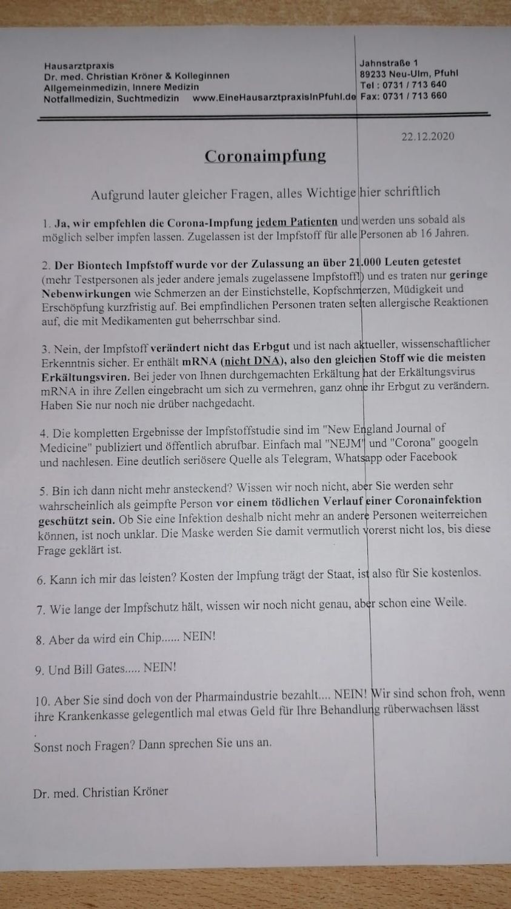
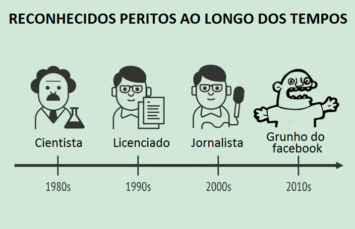
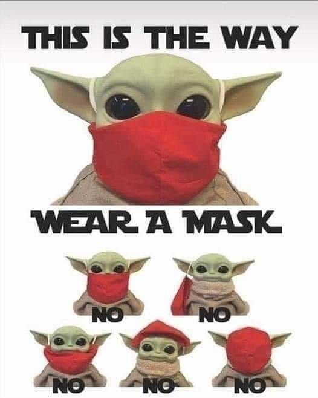
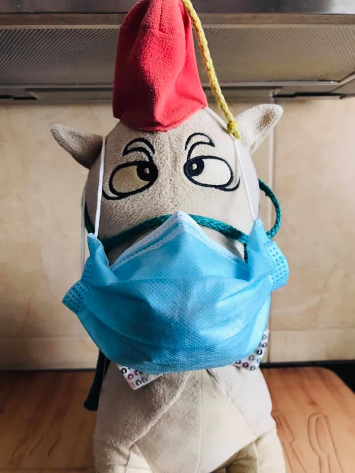
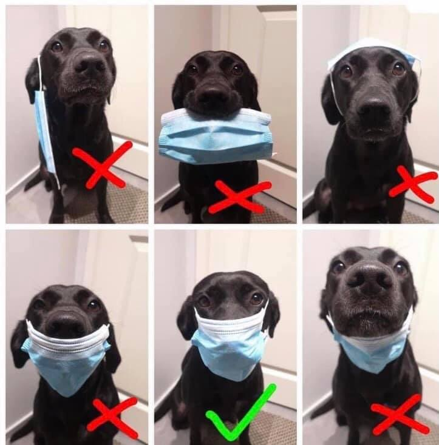
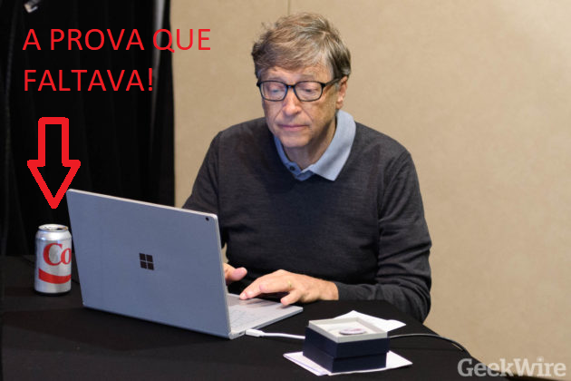
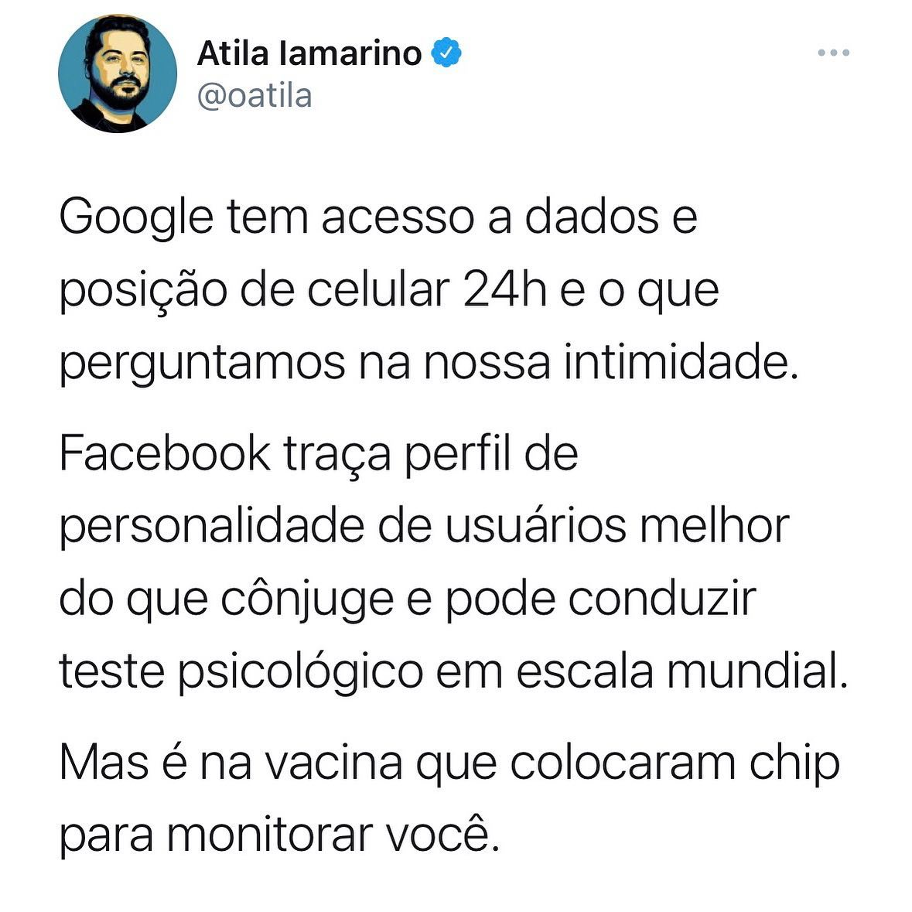

Humor¶
Humor¶
- Papiro
- "Loures põe funcionários a contar autocarros para garantir que passam todos"
- Comentário: Sera’ que vao usar papiro e escrever com penas e tinta dos monges copistas?
- Entrevista surreal
- "entrevista a Correia de Campos e Diogo Cabrita"
- Comentário: Uma entrevista/debate completamente surreal, a todos os niveis. A jornalista tao cedo nao vai esquecer estes 30m.
- Atraso na APP
- "O que falta fazer para a app que ajudará no rastreio da Covid-19 estar pronta"
- Comentário: estamos na fase da APP estar pronta "no fim do mês, em cada mês". Na fase do "eu digo o mês, mas não digo o ano".
- Almoçar morcego
- "Local de habitação "é o principal meio de transmissão" do vírus"
- Comentário: Mas a DGS acho que andamos todos a almoçar morcego?
Vampiros¶
"Ah e tal, o problema e' a App covid ter o bluetooth sempre ligado."
A tal app que foi desenhada explicitamente para respeitar a privacidade.
Exactamente como as companhias mais valiosas do mundo foram desenhadas explicitamente para abusar da vossa privacidade.
O Vampiro so' entra em casa convidado. No FB e quejandos, e' um muro de texto em legales, e um botao convidativo a dizer "I agree".
Humor sobre negacionistas¶
Sessao Hilariante do "Extremamente Desagradável" sobre os jornalistas pela verdade: https://www.youtube.com/watch?v=NhmmQUXGQvA
Antonio Costa vs Pacheco Pereira¶
O ponto alto do debate ontem na TVI24 aos 38m40s:
"'O Pacheco Pereira eu garanto lhe uma coisa voce nao gosta de esponja voce por característica gosta dessa coisa confrontacional tivesse eu a sua personalidade, e ao fim de 15 dias da pandemia tinha caido para o lado ou nao tinha resistido"
Premio Unicórnio Voador 2020¶
Quem foi o mais negacionista em 2020? quem causou mais dano 'a sociedade? Uma escolha muito dificil
Prémio Unicórnio Voador 2020 - Battle Royale - Médicos pela Verdade - Jornalistas pela Verdade - Advogados pela Verdade - César Augusto Moniz - João Beles - André Dias - Raquel Varela
https://tinyurl.com/unicorniovoador2020

Anormais¶
Para mim o pior da pandemia não foram as mortes, foi perceber que vivo rodeado de atrasados mentais, obscurantistas, irracionais, falsificadores, egocêntricos, egoistas, abjectos e mentirosos. Mesmo em sítios ou pessoas que achariamos que seriam bastiões seguros de inteligência, racionalidade e humanidade.
Vivemos rodeados de anormais em quem não podemos confiar.
9x Internados no Supermercado¶
"A senhora da caixa (do supermercado) dirige-se ao microfone e diz: 'A pessoa que está identificada com covid que se dirija em segurança à caixa'. Apareceram nove. Isto não é uma anedota, apareceram nove pessoas”,
Entrevista a maria jose morgado¶
Respostas lamentaveis, a todos os niveis.
Em particular ao 30s: "mas havia alternativa?" -> "nao me faca essa pergunta, nao vou responder" https://www.youtube.com/watch?v=71lJsZVCgKE
sem surpresas, tambem recorre 'a reducao "ad Hitlerum" https://pt.wikipedia.org/wiki/Reductio_ad_Hitlerum
video: https://www.youtube.com/watch?v=71lJsZVCgKE
NEIN...¶
Nos nao falamos Alemao... mas nem e' preciso usar o google translate para perceber o que este medico nos esta' a dizer:
" ... 8. Aber da wird ein Chip.... NEIN! 9. Und Bill Gates.... NEIN! ... "
In Portugal we do get our fair share of idiots that have a special pleasure of both promoting and spreading extremly obvious fake news.

Pictures¶
Grunho do facebook: 
Fernando Rocha:

Baby Yoda teaches masks: 
Mascaras: 
Patudos: 
Bill Gates e a Coca Cola: 
Especialistas do Facebook:
Seguranca das Vacinas:

Clientes fogem para nao serem apanhados:

Bula da vacina covid:

Rapidez da vacina:

O Chip da vacina: 
Somos todos especialistas em avioes: